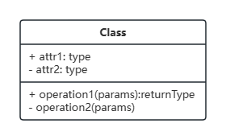
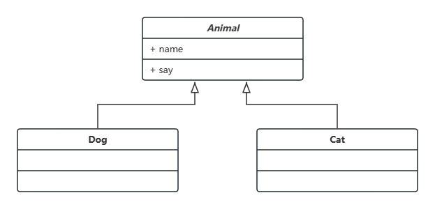
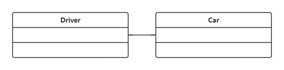

面向对象和类图
本文记录一些面向对象的概念以及类图的规范，代码部分主要是介绍 python 中的写法。
python 中的类
类属性
python 中使用关键字 class 定义一个类。类中的属性包含两种，类属性和对象属性。类中私有属性可以通过添加两个下划线实现，即 __
1 | class Student: |
但是私有属性只是 python 解释器把 __pri 变成了 _Student__pri，按后面这个是可以访问的。
类中的方法
类中定义的方法，可以分为实例方法，类方法以及静态方法。
实例方法
实例方法第一个参数是实例的引用，我们用 实例.方法() 时，相当于将自身的引用传入，实例方法定义时第一个参数一般是 self 关键字（不是 self 编译也能过），此外还可以使用 类.方法(实例) 的方式使用。 构造函数也是实例方法。
1 | class Student: |
上述两种调用 getname 的方法都是可以的。
类方法
类方法需要装饰器 @classmethod，类方法第一个参数是类对象（python 中一切皆对象，我们定义的类本身也是一个对象），因此很容易解释它只能访问到类属性。第一个参数一般命名为 cls（当然也可以换成其他的），使用类方法的方式也有两种，即 类.类方法 和 实例.类方法，但是推荐用法还是第一种
1 | class Student: |
静态方法
静态方法需要装饰器 @staticmethod，静态方法和类外部的函数类似，不和类或者对象进行绑定，因此他无法访问类属性和对象属性，他只是类命名空间中的一个方法而已。
1 | class Student: |
静态方法通过类和实例都可以访问。最后两种调用 incyear 的方法都是可以的。
同样的，类方法可以通过添加 __ 的方式将方法设置为私有的方法
1 | class Student: |
继承
继承能实现代码的重用，子类可以获取父类的属性和方法。继承的定义方式是 class 子类(父类)，先从一个简单的例子入手
1 | class Animal: |
子类能够继承了父类的方法和属性。python 是一个允许多继承的语言，子类也能继承了多个父类，写法是 子类(父类1, 父类2, ...)
1 | class Animal: |
当继承的多个父类有同名属性或方法时，会优先调用继承的第一个类的属性和方法
方法解析顺序 MRO
一个类的方法和属性可能定义在基类，也可能定义在它继承的某一个父类中。因此调用类方法和属性时，需要对类及其父类进行搜索，这个搜索顺序就是 MRO。单继承的语言比如 java 的 MRO 非常简单，逐步往父类搜索即可，但是对于多继承的语言来说，比如 C++ 和 python，多继承会带来一些困难。
在 c++ 中，多继承会带来菱形继承的问题。
1 | class A { |
注释处会出现报错，因为 B,C 都继承自 A，都有属性 n，当实例 d 修改属性 n 时，编译器不知道 d.n 指的是哪个作用域下的，会出现二义性，c++ 的解决方法是虚继承。python3 中，MRO 列表的构造是通过一个C3线性化算法来实现的。它实际上就是合并所有父类的 MRO 列表并遵循如下三条准则：
- 子类会先于父类被检查
- 多个父类会根据它们在列表中的顺序被检查
- 如果对下一个类存在两个合法的选择，选择第一个父类
一个类的 mro 可以通过 __mro__ 属性访问
1 | class Base: |
C 的 MRO 列表为 [C, A, B, Base]
super 类
super(cls, inst) 返回一个代理对象，将方法的调用委托给实例 inst 的 mro 列表中 cls 的下一个类。
1 | c = C() |
上述代码中使用 super(A, c).__init__() 相当于执行的是 B 的构造函数。在某个类 C 中使用 super() 等同于使用 super(C, self)
抽象类和接口
java 是单继承的语言，只能继承一个父类（包括抽象类），但是可以继承多个父接口。抽象类和接口都无法实例化，都可以包括一些未实现的方法。但是抽象类内是可以写非抽象方法，接口只能写抽象的方法。一个类只继承于一个
python 也可以实现抽象类和接口。首先是抽象类，类是一些具有相似数据特征的结构，抽象类则是对具有相似结构类的抽象。
抽象类的特点是只能被继承，不能被实例化。python 中可以使用 abc 模块实现，通过继承 abc.ABC 来定义抽象类，通过 @abstractmethod 装饰器定义抽象方法
1 | from abc import ABC, abstractmethod |
在子类中，必须实现 Payment 中的两个抽象方法，否则会出现 Error
魔术方法
- [ ] todo
类图
类图有三个部分，从上到小是类名、属性和方法。属性和方法前的 - 代表 private，+ 代表 public。如果一个类是抽象类，则类名可以用斜体或者放入 <<>> 中来进行区分

了解了类图的组成之后，需要说明类图中怎么表现类之间的关系。
本节的所有类图使用 ProcessOn 绘制
-
泛化
泛化用实线箭头表示
-
实现
实现指的是实现了抽象类或接口定义的方法，用虚线箭头表示。 -
关联
关联关系指的是类之间存在某种联系，用不带箭头的实现表示，下面的聚合和组合都是特殊的关联关系。
-
聚合
聚合描述的是整体和局部的关系，用实线空心菱形表示，菱形的一侧是整体。需要注意的是聚合中的整体和局部生命周期是独立的。比如员工和部门的关系。 -
组合
组合也是局部和整体的关系，用实线实心菱形表示。组合和聚合的区别是，整体被销毁时，局部也全部被销毁。如浏览器窗口和标签页的关系组合强调的更多还是生命周期的依赖关系，比如用户的订单是依赖于某个用户的，这也是组合关系。
Reference
Python 面向对象学习整理 （看这一篇就足够了
详解Python类中的三种方法
Python MRO方法解析顺序详解
调用父类方法
内置函数 - Python 3.11.4 文档
看懂UML类图和时序图